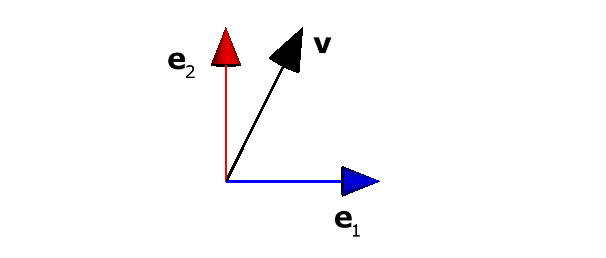
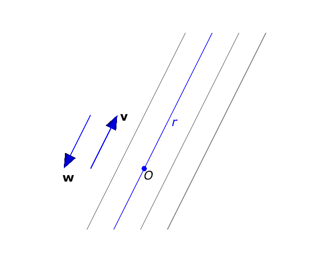
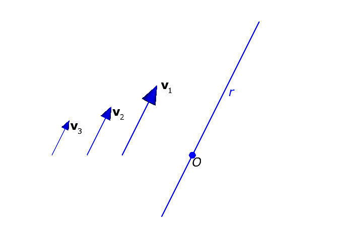
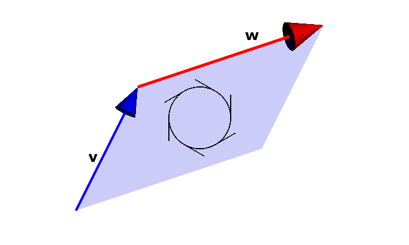
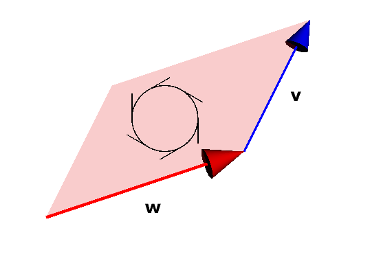

2 O produto externo
2.1 Vetores em \(\mathbb{R}^2\)
Por enquanto, vamos trabalhar no espaço vetorial \(\mathbb{R}^2\).
Os elementos de \(\mathbb{R}^2\) são vetores com duas coordenadas; por exemplo:
\[ \begin{array}{l} \mathbf{v} = (\frac12, 1)\\ \mathbf{w} = \left( -3, \frac{\sqrt{2}}{2} \right) \end{array} \]
Notação: vetores em negritoVocê deve estar acostumado a escrever nomes de vetores como \(\vec v\), \(\vec w\) etc.
Neste livro, como na maioria dos livros sobre álgebra geométrica, nomes de vetores serão escritos em negrito: \(\mathbf{v}\), \(\mathbf{w}\).
Usando a base canônica de \(\mathbb{R}^2\), com \(\mathbf{e}_{1} = (1, 0)\) e \(\mathbf{e}_{2} = (0, 1)\), os vetores do exemplo acima podem ser escritos como
\[ \begin{array}{l} \mathbf{v} = \frac12\mathbf{e}_{1} + \mathbf{e}_{2}\\ \mathbf{w} = -3 \mathbf{e}_{1} + \frac{\sqrt{2}}{2}\mathbf{e}_{2} \end{array} \]
Tecnicamente, estamos escrevendo cada vetor como uma combinação linear dos vetores da base \(\{ \mathbf{e}_{1}, \mathbf{e}_{2} \}\). Veja a Figura 2.1.

Notação: vetores como combinações lineares dos vetores da baseComo na maioria dos livros sobre álgebra geométrica, em vez de escrevermos \[ \mathbf{v} = (x, y) \] vamos escrever \[ \mathbf{v} = x\mathbf{e}_{1} + y\mathbf{e}_{2} \]
Se uma das coordenadas for zero, podemos omitir o vetor da base correspondente. Por exemplo, vamos escrever o vetor \[ \mathbf{u} = (0, 3) \] como \[ \mathbf{u} = 3\mathbf{e}_{2} \]
Para acompanhar o restante deste capítulo, você deve revisar os seguintes tópicos sobre vetores, especialmente em \(\mathbb{R}^2\) e em \(\mathbb{R}^3\):
- Adição de vetores,
- Multiplicação de vetor por escalar (nossos escalares vão ser números reais),
- Vetor nulo,
- Vetor inverso (para a adição),
- Dependência e independência linear,
- Módulo (norma) de um vetor,
- Produto vetorial,
- Subespaços vetoriais.
2.2 Retas em \(\mathbb{R}^2\)
Por enquanto, só temos vetores.
Cada vetor (diferente de \(\mathbf{0}\), o vetor nulo) indica uma direção.
Mas apenas uma direção não basta para definir uma reta. Por exemplo, todas as retas da Figura 2.2 têm a mesma direção: a direção dada pelo vetor \(\mathbf{v} = \mathbf{e}_{1} + 2\mathbf{e}_{2}\).

Vamos combinar que todas as nossas retas de interesse passam pela origem — ou seja, pelo ponto \(O=(0,0)\).
Fazendo isto, cada vetor determina uma única reta.
Chamamos as retas que passam pela origem de retas homogêneas. Na Figura 2.2, só há uma reta homogênea (a reta \(r\)).
Mas, além de uma direção, um vetor também um sentido.
Na Figura 2.2, o vetor \(\mathbf{w} = -\mathbf{e}_{1} - 2\mathbf{e}_{2}\) tem a mesma direção da reta \(r\), mas seu sentido é oposto ao sentido do vetor \(\mathbf{v}\).
Então, qual dos dois vetores \(\mathbf{v}\) e \(\mathbf{w}\) representa a reta \(r\)?
Vamos decidir esta questão do seguinte modo: nossas retas também vão ter um sentido. Ou seja, vamos trabalhar com retas orientadas.
Na Figura 2.2, então, os vetores \(\mathbf{v}\) e \(\mathbf{w}\) representam duas retas \(r\) e \(r'\), ambas com a mesma direção, mas com sentidos opostos.
Mas, além de direção e sentido, um vetor também tem um comprimento (ou magnitude, ou módulo, ou norma).
Na Figura 2.3, os \(3\) vetores \(\mathbf{v}_1, \mathbf{v}_2\) e \(\mathbf{v}_3\) têm a mesma direção e sentido que a reta \(r\).

De novo, vamos combinar que cada um destes vetores define uma reta diferente, todas as retas com a mesma direção e sentido, mas cada reta com uma magnitude (ou peso) diferente.
Você pode imaginar o peso de uma reta como a velocidade com que um ponto percorre a reta, ou como a velocidade com que a reta avança na direção e no sentido especificados pelo vetor.
Resumindo: vetores \(=\) retas homogêneas orientadas e com pesoUm vetor \(\mathbf{v} = a\mathbf{e}_{1} + b\mathbf{e}_{2}\) (com \(a, b \in \mathbb{R}\), e com pelo menos um dentre \(a\) e \(b\) diferente de zero) representa uma reta homogênea orientada, com a direção e o sentido de \(\mathbf{v}\), e com peso igual à norma de \(\mathbf{v}\): \[ ||\mathbf{v}|| = \sqrt{a^2 + b^2} \]
2.3 Bivetores em \(\mathbb{R}^2\)
Acabamos de ver que vetores em \(\mathbb{R}^2\) correspondem a comprimentos orientados.
Agora, vamos definir objetos em \(\mathbb{R}^2\) que correspondem a áreas orientadas.
Uma área orientada vai ser construída a partir de dois vetores linearmente independentes (isto é, não paralelos).
Por exemplo, a Figura 2.4 mostra a área orientada definida pelos vetores \(\mathbf{v} = \mathbf{e}_{1} + 2\mathbf{e}_{2}\) e \(\mathbf{w} = 3\mathbf{e}_{1} - \mathbf{e}_{2}\) (nesta ordem). A orientação, indicada na figura pelo círculo com os raios, é no sentido horário.
A orientação depende da ordem dos vetores. A Figura 2.5 mostra a área orientada definida pelos mesmos vetores \(\mathbf{w} = 3\mathbf{e}_{1} - \mathbf{e}_{2}\) e \(\mathbf{v} = \mathbf{e}_{1} + 2\mathbf{e}_{2}\), na ordem inversa da Figura 2.4. A orientação, agora, é no sentido anti-horário.


Estas áreas orientadas são chamadas bivetores.
Um bivetor em \(\mathbb{R}^2\) tem, além da orientação, um peso. O valor absoluto do peso é a área correspondente ao bivetor — isto é, a área do paralelogramo definido pelos vetores.
A área do paralelogramo definido pelos vetores \(\mathbf{v}\) e \(\mathbf{w}\) é
\[ ||\mathbf{v}||\, ||\mathbf{w}|| \,\text{sen}\,\theta \]
onde \(\theta\) é o ângulo entre \(\mathbf{v}\) e \(\mathbf{w}\).
Esta área também pode ser calculada através de um determinante específico, usado no cálculo do produto vetorial \(\mathbf{v} \times \mathbf{w}\). Você vai relembrar isto no exercício ???.
No exemplo da Figura 2.4, o peso do bivetor é \(-7\), se convencionarmos que a orientação no sentido horário corresponde a áreas negativas.
No exemplo da Figura 2.5, o peso do bivetor é \(7\), se convencionarmos que a orientação no sentido anti-horário corresponde a áreas positivas.
Em \(\mathbb{R}^2\), a atitude (ou direção) de todo bivetor é a mesma, pois todos os bivetores estão no mesmo plano.
Então, assim como fizemos com os vetores (que associamos a retas orientadas e com peso na Seção 2.2), vamos associar a cada bivetor um plano (ou uma parte do plano) orientado e com peso.
A forma e a posição da área correspondente a um bivetor não são importantes. As figuras mostram paralelogramos, mas os mesmos bivetores poderiam ser mostrados como círculos, triângulos etc. com a mesma área, em qualquer posição do plano.
As figuras parecem diferenciar o plano (que é infinito) e bivetores (que têm, associados a eles, áreas finitas). Mais adiante, vamos ver que, em algumas aplicações, podemos interpretar um bivetor como representando o plano no qual ele está contido; em outras aplicações, podemos interpretar um bivetor como uma porção finita do plano.
Resumindo: bivetores \(=\) áreas orientadas e com pesoUm bivetor definido pelos vetores \(\mathbf{v}\) e \(\mathbf{w}\) representa uma área orientada e com peso no plano que contém \(\mathbf{v}\) e \(\mathbf{w}\).
O valor absoluto do peso do bivetor é dado por
\[ ||\mathbf{v}||\, ||\mathbf{w}|| \,\text{sen}\,\theta \]
onde \(\theta\) é o ângulo entre \(\mathbf{v}\) e \(\mathbf{w}\).
O sinal do peso depende da orientação do bivetor, segundo a convenção adotada.
2.4 O produto externo
2.5 O espaço vetorial \(G(2)\)
2.6 Vetores e retas em \(\mathbb{R}^3\)
Agora, vamos trabalhar em \(\mathbb{R}^3\).
Tudo que falamos acima sobre vetores e retas em \(\mathbb{R}^2\) se aplica a vetores e retas em \(\mathbb{R}^3\), com as seguintes alterações:
A base canônica agora é \(\{ \mathbf{e}_{1}, \mathbf{e}_{2}, \mathbf{e}_{3} \}\), onde os vetores correspondem aos eixos \(x\), \(y\) e \(z\), respectivamente.
Logo, um vetor em \(\mathbb{R}^3\) é escrito como \(\mathbf{v} = x\mathbf{e}_{1} + y\mathbf{e}_{2} + z\mathbf{e}_{3}\), com \(x, y, z \in \mathbb{R}\).
Cada vetor \(\mathbf{v} = a\mathbf{e}_{1} + b\mathbf{e}_{2} + c\mathbf{e}_{3}\) (com \(a, b, c \in \mathbb{R}\), e com pelo menos um dentre \(a\), \(b\) e \(c\) diferente de zero) representa uma reta homogênea orientada, com a direção e o sentido de \(\mathbf{v}\), e com peso igual à norma de \(\mathbf{v}\): \[ ||\mathbf{v}|| = \sqrt{a^2 + b^2 + c^2} \]
A Figura 2.6 mostra um exemplo.